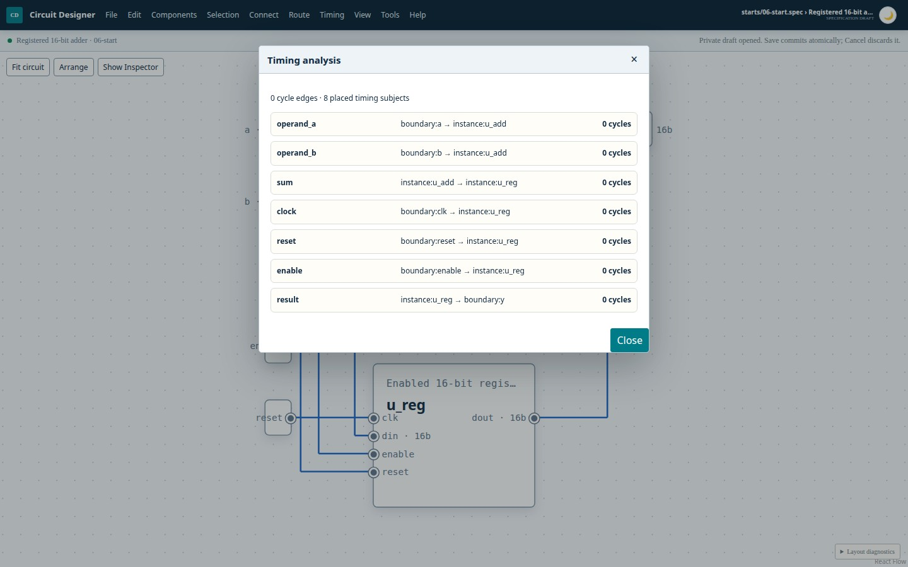
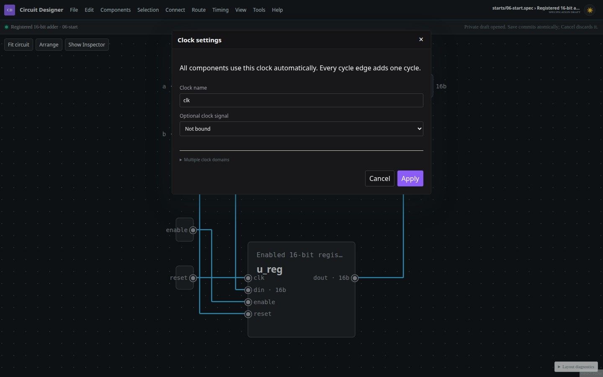

CIRCUIT DESIGNER · 7 MINUTES
Inspect stages and clock domains
Add a timing annotation and inspect its path analysis.
Before you start
Circuit Designer. Use a fresh completed checkpoint, separate from your final core result.
Actions
- Open the internal Design. Select Edit → Begin editing. Arrange u_add before u_reg with enough empty space between them.
- Select Timing → Add cycle edge and place the marker between the two blocks. It must not divide a block or boundary terminal. Inspect the path from u_add.y to u_reg.din.


- Open Timing → Timing analysis. Inspect the cycle count and any feedback warnings. Each crossed cycle edge adds one annotated cycle to a same-domain path.
- Select u_reg, then open Timing → Clock settings. Inspect the default clk domain. Expand Multiple clock domains, enter a New domain named practice, and select Add. Set Selected object domain to practice, then select Apply. Reopen Timing analysis and inspect any clock-domain crossing warning. Keep the actual RTL clock wiring in view.
- If the practice domain does not describe the hardware, restore the selected block to clk and remove the practice domain before saving. Save the intended marker with Save to Spec and inspect it in the Spec preview. This annotates timing; it does not insert a register or change the saved SystemVerilog body.


Check your result
The marker and reported latency agree with the intended stage boundary. You can identify a clock-domain warning without treating it as a completed CDC verification.
Try it yourself
Toggle the timing overlay in View. Compare the canvas with an SVG export using that same visibility setting.
If it fails
If a marker placement is rejected, move it into empty space. If Selected object domain is absent, close the dialog, clear the selection, select one block, and reopen it. If the control remains unavailable, record that limit and leave domain assignment incomplete. Correct annotations that disagree with RTL; they do not change the implementation.
Continue
CONTINUEExplore another feature →Reference: circuit designer · Complete example